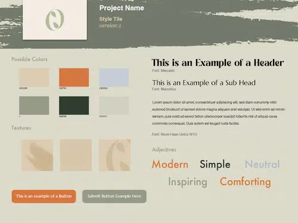
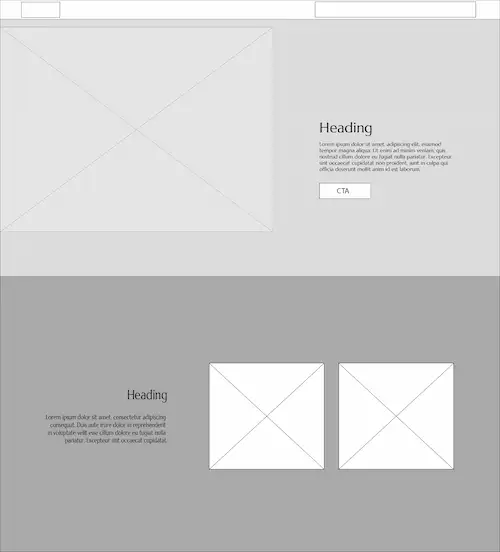
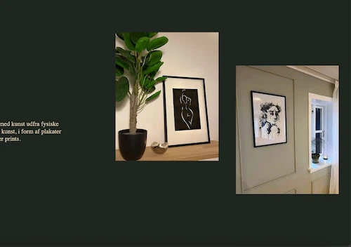

Emnesite

I projektet "emnesite" havde vi frihed til at vælge emne og udvikle det selv. Til mit site valgte jeg at skabe et kunstportfolio. Jeg kunne derfor bruge mine egne billeder og materialer i projektet.
Dette projekt udvidede min viden om webudvikling, brugervenligt design og billedbehandling.
Jeg lærte også meget om responsivt design, hvor jeg først udviklede til mobil og derefter til desktop. Dette sikrede, at min hjemmeside var tilgængelig og optimalt vises på forskellige enheder.

For at fuldføre opgaven brugte jeg:
HTML, CSS, Adobe Photoshop, Adobe Illustrator
Forsiden til emnesite.
Andvendelse af formater tilpassende web. For eksempel brug af .webp format til billeder.
Vi lærte at bruge css at style elementer. Dette er elementer som de forskellige typer tekst, eller f.eks. knapper.
Jeg eksperimenterede med forskellige CSS-stilarter i mit design, herunder brugen af hover-effekter.
Process

Jeg begyndte projektet med at lave styletile og moodboard for at udvikle et visuelt udtryk.
Derefter udarbejdede jeg wireframes til både desktop- og mobilversionen af sitet.
Jeg gik derefter i gang med at finde materiale og billeder til indholdet på min hjemmeside, som jeg redigerede og konverterede til .webp-format. Jeg brugte mine egne billeder for at undgå ophavsretlige problemer.
